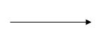

Dalam pengembangan sistem informasi dibutuhkan tahapan desain sistem, yang berfungsi sebagai perancangan untuk elemen-elemen komputer yang akan digunakan pada sistem baru. Alat bantu dalam perancangan desain sistem ada banyak macam nya, yang salah satu diantaranya adalah Data Flow Diagram atau disebut DFD.
Pengertian DFD adalah suatu model logika data atau proses yang dibuat untuk menggambarkan menggunakan simbol-simbol untuk merepresentasikan aliran data antara proses, penyimpanan data dan aliran ke dalam dan keluar sistem.
Penggunaan DFD dipolulerkan oleh DeMarco (1978) dan Gane & Sarson (1979) melalui metodologi analisis sistem terstruktur (structured systems analysis methodologiies). Sehingga ada dua teknik dasar dalam pemakaian simbol-simbol DFD. Akan tetapi yang akan diterangkan pada postingan ini adalah simbol-simbol DFD yang serign digunakan :
Berikut adalah simbol-simbol yang sering digunakan
Simbol-simbol ini akan diterangkan sekaligus dengan contoh sistem informasi penggajian, agar dapat langsung dipahami.
1.Entitas Eksternal
Merupakan komponen DFD yang berada diluar sistem dan perannya adalah memberi input data ke sistem atau menerima output data/informasi dari sistem. Terkadang entitas eksternal ini diberi huruf sebagai indentitas semisal P untuk pegawai atau D untuk direktur.
.
Dalam gambar diatas adalah simbol entitas eksternal dengan diberi nama Pegawai atau bisa juga ditulis dengan huruf P dalam sistem informasi penggajian. Pegawai akan dapat memberi input pada sistem semisal data_karyawan atau mendapat output dari sistem seperti slip_gaji.
2.Proses
Proses memperlihatkan mengenai apa yang dilakukan oleh sistem, kaitannya dengan akifitas pengolahan data (perekaman, pengolahan, pembentukan informasi dsb). Setiap proses mempunyai satu atau lebih data input dan menghasilkan satu atau lebih data output.
Gambar diatas adalah simbol dari proses (sis. inf penggajian) yang dari proses ini akan dapat menerima inputan dari pegawai seperti data_karyawan kemudian sistem memproses inputan tersebut sehingga menghasilkan output kepada pegawai seperti slip_gaji.
3.Data Flow
Data flow (aliran data) adalah data yang mengalir di dalam sistem, tepatnya adalah : diantara dua proses, dari data store ke proses dan sebaliknya, dari entitas eksternal ke sistem dan sebaliknya. Penamaan pada sebuah data flow diusahakan sesuai mewakili objek data sebenarnya.
Pada contoh data flow data_karyawan dan slip_gaji merupakan aliran data dari entitas eksternal menuju pada sistem dan sebaliknya.
4.Data Store
Merupakan komponen yang berfungsi untuk menyimpan data atau file. Pandanga data store dilepaskan dari konsep file database atau arsip dokumen manual.
Flowchart
Flowchart adalah sebuah jenis diagram yang mewakili aliran kerja suatu sistem, atau dapat mewakili algoritme yang menampilkan tahapan-tahapan langkah dalam bentuk simbol-simbol yang telah ditentukan. Sesuai dengan artinya jika dibahasakan Bahasa Indonesia, yaitu diagram alir jadi Flowchart ini diagram yang mengalirkan atau mewakili ilustrasi penggambaran penyelesaian sebuah masalah.
Dalam perancangan Flowchart sebenarnya tidak memiliki rumus tertentu, hanya saja Flowchart memiliki simbol-simbol yang biasa digunakan (Gambar Simbol Flowchart). Flowchart bisa dikatakan sebagai gambaran dari hasil pemikiran dalam menganalisa suatu permasalahan dalam computer.
Seperti yang dijelaskan diatas, maka fungsi utama Flowchart adalah sebagai penggambaran, penyederhanaan rangkaian proses atau prosedur sehingga mudah dipahami dan mudah dilihat berdasarkan dari urutan langkah suatu proses. Perbedaan yang mendasar antara Flowchart dengan DFD (Data Flow Diagram) adalah pada langkah urutan. Dimana diketahui bahwa DFD tidak terpaku pada prosedur langkah atau urutan.
Use Case Diagram
Use Case Diagram adalah sebuah penggambaran dari interaksi pengguna dengan sistem yang menunjukan hubungan antara pengguna dengan sistem. Use Case direpresentasikan dengan urutan langkah yang sederhana, sehingga mudah untuk dibaca.
Ada beberapa fungsi utama dari Use Case, diantaranya :
1.Dapat memperlihatkan urutan aktivitas proses yang ada pada sistem.
2.Menggambarkan proses bisnis dan juga aktivitas yang ada didalam sistem.
Contoh sederhana dari penerapan Use Case Diagram pada "sistem informasi ojek online"
Contoh Use Case Sistem Informasi Ojek OnlieExtend
Extend, relasi Use Case tambahan ke sebuah Use Case dimana Use Case yang ditambahkan dapat berdiri sendiri meski tanpa Use Case tambahan itu. Arah panah mengarah pada Use Case yang ditambahkan.
Include
Include, relasi Use Case tambahan ke sebuah Use Case dimana Use Case yang ditambahkan membutuhkan Use Case ini untuk menjalankan fungsinya. Arah panah Include mengarah pada Use Case yang dipakai atau mengarah pada Use Case tambahan.

generalisasi
Generalisasi, Hubungan Generalisasi dan Spesialisasi antara dua buah Use Case dimana fungsi yang satu merupakan fungsi yang lebih umum dari lainnya. Arah panah mengarah pada Use Case yang menjadi Generalisasi.
Activity Diagram
Fungsi Activity Diagram
Memperlihatkan urutan aktifitas proses pada sistem.
Membantu memahami proses secara keseluruhan.
Activity diagram dibuat berdasarkan sebuah atau beberapa usecase.
Menggambarkan proses bisnis dan urutan aktivitas dalam sebuah proses.
komponen Activity Diagram
Initial State adalah awal dimulanya suatu aliran kerja pada activity diagram pada sebuah activity diagram hanya terdapat satu initial state.
Activity adalah pekerjaan yang dilakukan dalam aliran kerja.
Transition untuk menghubungkan aktivitas selanjutnya setelah dari aktivitas sebelumnya.
Decision berfungsi untuk menggambarkan pilihan kondisi dimana ada kemungkinan perbedaan transisi, untuk memastikan bahwa aliran kerja dapat mengalir ke lebih dari satu jalur.
Final stateadalah bagian akhir dari suatu aliran kerja pada sebuah activity diagram dan pada sebuah activity diagram bisa terdapat lebih dari satu final state.